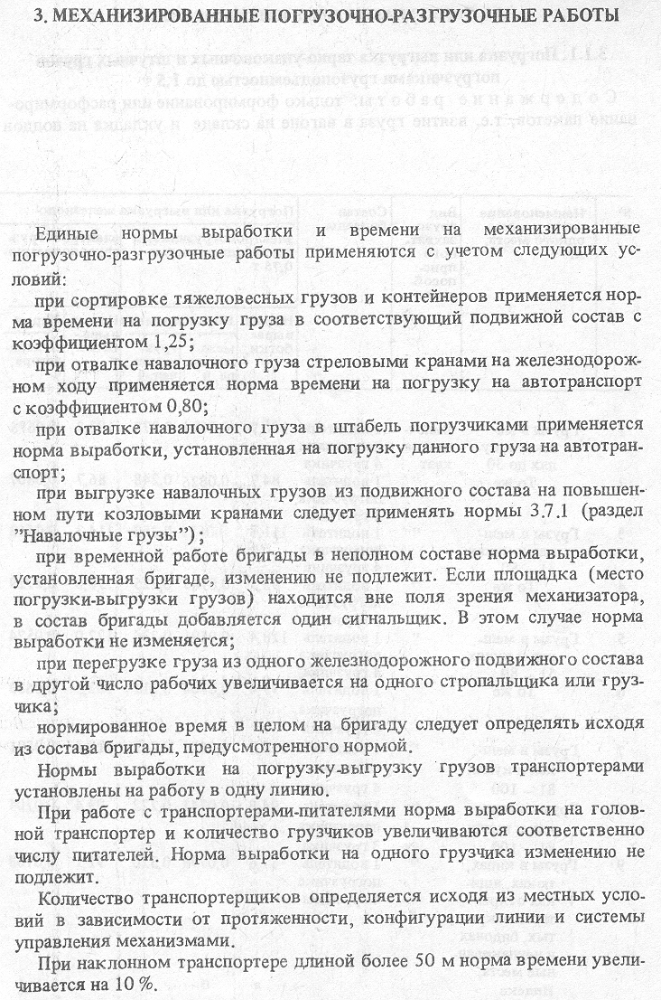

3.1. Тарно-упаковочные и штучные грузы 3.2. Мясные грузы 3.3. Тяжеловесные грузы 3.4. Металлы и металлические изделия 3.5. Зерновые грузы россыпью 3.6. Лесоматери 3.7. Навалочные грузы 3.8. Огнеупорные грузы